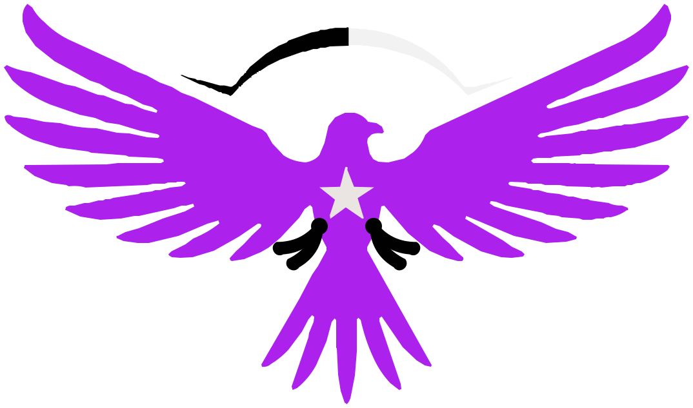

Si no existe la herramienta, se construye la herramienta.
GRUPAZ.
›
✳
El Cerebro NUEVO
La memoria que no se borra: 92 neuronas con los errores que ya
costaron caro, qué es cada pieza del proyecto y qué se descartó en cada decisión.
Se busca con las palabras de quien tiene el problema enfrente, no con el término
técnico. Y desde La Sala lo consultan todas las IAs, no sólo la mía.
›
▦
El Taller NUEVO
El entorno 3D para verme trabajar: un agente con cuerpo frente a una
computadora que muestra en qué anda. Si el aparato no puede con 3D lo dice en
castellano en vez de quedarse en negro.
›
▣
Avisos del 3.1 NUEVO
Los pendientes del día convertidos en una imagen para el chat, en un
minuto. Materias y maestros salen de tu horario real, cada una con su icono y su
color; Dirección, Prefectura y Sociedad de alumnos van aparte porque no son
materia. 10 plantillas para que el cartel no se vea igual todos los días.
›
▤
Reportes NUEVO
Escribe o pega el texto y se acomoda solo en hojas con el
membrete real del Instituto Rembrandt, listas para PDF. Trae esqueletos de
incidencia, minuta, propuesta e informe, evidencias fotográficas numeradas,
marca de agua de la casa y sello de verificación contra falsificaciones.
›
◈
Explorador NUEVO
Todo mi GitHub desde el teléfono. Abre los .md con formato,
las imágenes y el código; busca, fija favoritos y cambia de rama. Llega hasta
.claude/, que GitHub Pages nunca publica.
›
Clona github.com/ejercitopalomazi9111-arch/palomazi y corre setup.ps1
De ahí salen las skills, la memoria, el CLAUDE.md y todos los proyectos.